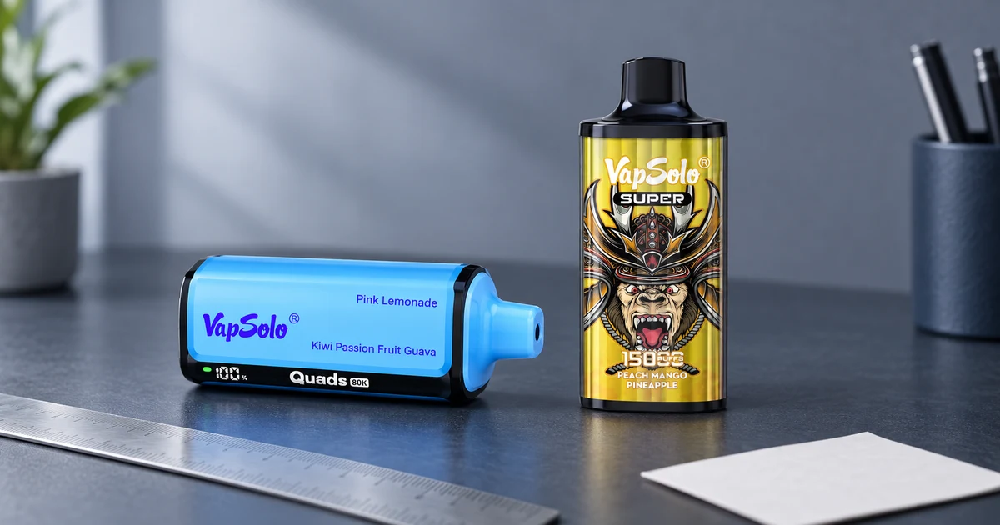

Qué son las caladas en un vaper y cómo interpretarlas
La cifra de caladas de un vaper es una estimación anunciada por la marca. Sirve para situar modelos en una escala, pero no equivale a días de uso ni a una promesa de duración personal.

Qué mide el número de caladas
Una calada es una activación del dispositivo. La cifra se calcula bajo unas condiciones de prueba concretas, incluida una duración de inhalación. En el uso cotidiano cambian el ritmo, la duración de cada aspiración y la forma de utilizar el dispositivo; por eso el resultado no es idéntico para todas las personas.
Por qué puede variar el resultado
- La frecuencia y la duración de las inhalaciones no son iguales.
- El flujo de aire, cuando el formato lo ofrece, puede cambiar el consumo.
- La cifra anunciada es una referencia de comparación, no una garantía individual.
Cómo comparar caladas con criterio
Compara primero formatos similares y revisa después la variedad de sabores y la ficha del producto exacto. VapSolo Super 15K y VapSolo Quads 80K muestran cifras declaradas diferentes. Ese contraste ayuda a ordenar categorías, pero no permite calcular una fecha de agotamiento.
| Lectura útil | Lectura que conviene evitar |
|---|---|
| Referencia para comparar categorías | “Me durará exactamente X días” |
| Dato que se revisa junto a la ficha | Único criterio de elección |
| Cifra anunciada por el fabricante | Garantía de rendimiento personal |
Conclusión
Las caladas ayudan a comparar vapers si se leen con contexto. Antes de decidir, comprueba la variante y las condiciones de la ficha actual. Amplía el criterio en la guía para elegir por sabores y caladas .